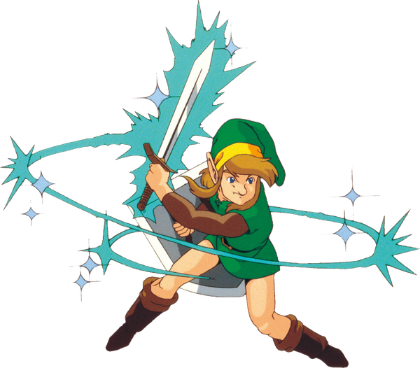

05 战斗系统
核心问题
在2D俯视角的约束下，《众神的三角神力》如何用极少的操作（方向键+B/A）构建出既有策略深度又低门槛的战斗系统？以及，这套战斗系统如何服务于"探索优先"的整体游戏节奏——既提供足够紧张感，又不过度占用玩家注意力？
机制描述
操作层：四动作战斗框架
玩家的战斗操作仅由四个动作组成：
| 操作 | 按键 | 功能 |
|---|---|---|
| 挥砍 | A（持剑时） | 面朝方向的横向斩击 |
| 旋转斩 | 长按A蓄力后松开 | 360°范围攻击，消耗无 |
| 冲刺斩 | 装备Pegasus Shoes后+方向键双击 | 带无敌帧的突进撞击 |
| 举盾 | 不按攻击键时自动 | 正面格挡投掷物和部分近战 |

剑的攻击判定为面朝方向的一个扇形区域，非精确的线形判定。这个"宽松"的碰撞体是整个战斗系统手感友好的基石。
伤害与防御数值
剑伤害与剑等级成正比：
| 剑 | 基础伤害倍率 | 获取时机 |
|---|---|---|
| Fighter's Sword | 1× | 游戏开局从叔叔处获得 |
| Master Sword | 2× | 收集三枚pendant后 |
| Tempered Sword (Lv2) | 3× | 锻造任务奖励 |
| Golden Sword (Lv3) | 4× | 大妖精泉升级 |
防具减伤：
| 防具 | 效果 |
|---|---|
| Green Clothes | 基础（无减伤） |
| Blue Mail | 受到伤害×0.5 |
| Red Mail | 受到伤害×0.25 |
减伤为乘法叠加。装备Red Mail后，原本造成2心伤害的攻击只造成0.5心。这意味着后期防具的边际效益极高——玩家从"三下死"变为"十二下死"。
敌人配置系统
士兵系敌人通过颜色+武器的组合矩阵产生大量变体：
| 颜色 | 含义 | 武器变体 |
|---|---|---|
| 绿 | 最弱，不主动追击 | 剑/矛/弓 |
| 蓝 | 中等，主动追击 | 剑/矛/弓/链球 |
| 红 | 强，快速追击 | 剑/矛/弓/链球/炸弹 |
| 金 | 最强，高血高攻 | 全武器 |
一套行为参数（速度、攻击频率、追击距离、HP）× 四种颜色 × 五种武器 = 二十种战斗遭遇变体，但策划只需要维护两套参数表。
颜色编码的双重功能：难度标记与无声叙事
颜色编码系统通常只被分析为战斗设计——用视觉语言让玩家即时判断威胁等级。但它同时承担了一个叙事功能，这层功能很少被注意到。
在 ALttP 的叙事中，Agahnim 用邪恶魔法催眠了 Hyrule Castle 的士兵（07 叙事结构）。颜色编码与这个叙事设定完美对应：
- 绿色士兵：普通士兵，未被催眠，行为被动——不会主动追击玩家。他们是"正常人"，除非被激怒否则不会攻击。
- 蓝色士兵：被初步催眠的士兵，开始主动追击——行为被操控但力量未增强。他们是"被控制的普通人"。
- 红色士兵：深度催眠的士兵，快速追击，装备升级——行为完全被操控，力量被增强。他们是"被强化的傀儡"。
- 金色士兵：最高级别的催眠产物，只在 Dark World 出现——完全被邪恶力量强化，是"黑暗力量的精锐"。
这意味着颜色编码不是纯机械的难度调节器——它在无声地讲述一个故事：Agahnim 的控制力从 Light World 的蓝/红延伸到 Dark World 的金色，玩家通过敌人的颜色变化直观感受到邪恶力量的渗透深度。 叙事中用文本（"巫师用魔法控制了士兵"）传达的信息，在战斗中被颜色编码可视化了。
这是一个可迁移的设计手法：当战斗系统的分类维度（如难度等级）恰好能映射到叙事维度（如敌我关系/控制程度/腐蚀程度）时，战斗本身就成为叙事的载体——不需要额外文本。
Boss行为循环
每个Boss遵循"安全窗口—攻击—安全窗口"的循环结构。以Armos Knight为例：
- 跳跃阶段（威胁期）：向玩家位置跳跃，落地产生冲击波，持续约3秒
- 着陆硬直（安全窗口）：落地后约1秒无法行动，可被攻击
- 循环，每次减少一只后剩余的加速
设计分析
解决了什么设计问题
问题一：2D俯视角的攻击方向限制。 俯视角下角色只能面朝四方向（实际为八方向），而敌人可能从任何角度逼近。如果攻击严格限定在面朝方向，战斗会变成令人沮丧的"瞄准"游戏。
解决方案：宽松判定+旋转斩。 挥砍的实际判定覆盖面朝方向约120°的扇形区域，玩家不需要精确对齐。旋转斩作为"紧急按钮"覆盖360°全方向，蓄力时间约1.5秒构成了一个战术权衡——站桩蓄力意味着暴露在攻击中。
问题二：战斗操作与探索操作争抢按钮。 SNES手柄只有A/B/X/Y/L/R六个主键，而游戏需要同时支持移动、攻击、使用道具、互动、切换道具等操作。
解决方案：情境化按键映射。 持剑时A为攻击，持道具时A为使用道具。盾牌自动举取，不需要专用按键。这使得战斗操作与探索操作共享同一套物理输入，切换成本仅为一个菜单操作。
问题三：如何在有限的Boss数量下保证多样性。 全游戏只有12个Boss（含Ganon），如果每个都是"砍到死"体验会极其单调。
解决方案：每个Boss要求一种特定的道具组合或战术。 这个设计决策直接催生了游戏中Boss设计最显著的特征——"剥皮"机制：
- Helmasaur King：先用炸弹破坏面具→露出本体弱点
- Arrghus：用钩爪逐一拉掉保护泡→攻击裸露核心
- Trinexx：用冰冻杖灭火头+火焰杖灭冰头→攻击中间躯体
- Kholdstare：火焰杖破冰壳→攻击→分裂后再攻击
每个Boss本质上是一个"如何创造攻击窗口"的谜题，而非纯粹的格斗挑战。
创造了什么体验
"读谱"式的战斗节奏。 敌人行为高度模式化——士兵举剑→停顿→挥砍，Wallmaster从墙边阴影出现→缓缓移动→抓取。玩家一旦识破模式，战斗就从"反应"变为"预判"，从紧张变为从容。这种"从恐惧到掌控"的情感弧线是塞尔达战斗体验的核心。
低惩罚的实验空间。 被击倒后损失极小（不丢物品，不丢卢比，仅回到房间入口），玩家可以反复尝试同一敌人直到理解其模式。战斗难度体现在"理解敌人"而非"惩罚失败"上。
道具驱动的战斗风格切换。 由于道具栏可以自由切换，同一场战斗有多种通关方式。面对一群远程敌人，玩家可以选择：
- 冲刺斩快速接近→挥砍（近战流）
- 回旋镖眩晕→逐个击破（控制流）
- 弓箭远距离狙杀（远程流）
- 炸弹抛物线轰炸（范围流）
游戏从不强制某种打法，但会通过地形和敌人配置让某些选择明显更优。
关键设计决策及其理由
决策一：旋转斩不消耗魔法。 在后续作品（如《时之笛》）中，旋转斩消耗魔法。但《众神》中选择让它免费使用，理由可能是：作为唯一的全方向攻击手段，如果消耗珍贵资源，玩家会囤积不用，反而让战斗变得僵硬。免费旋转斩鼓励玩家频繁使用它，使战斗节奏更流畅。
决策二：盾牌全自动。 盾牌在玩家不攻击时自动举起，面朝方向格挡。这是关键的设计直觉——如果盾牌需要手动操作，等于要求玩家在"攻击"和"防御"之间频繁切换，在2D俯视角下这会变成操作负担。自动盾牌让"防御"成为移动和走位的自然结果，而非额外的操作负担。
决策三：Boss掉落心之容器（满心恢复）。 每次击败Boss必掉一个完整的心之容器，这个设计同时满足三个功能：(1) 奖励——即时正反馈；(2) 恢复——Boss战后满血进入下一个区域；(3) 进度——永久增加最大HP。一个掉落物承载了奖励、恢复、进度三重意义，是高效设计的典范。
设计过程推导
从《塞尔达传说》初代到《众神的三角神力》，战斗系统经历了从"碰撞伤害"到"主动攻击"的演化。
推测 初代的战斗以碰撞为核心——敌人接触即伤害，玩家的剑攻击判定极窄。这导致了"对刀"式的战斗体验：精确对准方向比策略更重要。众神的设计团队可能从中提炼出一个问题：战斗的乐趣应该来自"瞄准"还是"决策"？
如果答案是"决策"，那么操作应该尽可能简化，把认知资源留给战术选择。这解释了为什么：
- 攻击判定宽松化（不需要精确瞄准）
- 盾牌自动化（不需要额外操作）
- 道具切换放在暂停菜单中（不在战斗中争抢按键）
推测 Boss"剥皮"机制的起源可能来自一个技术约束：SNES的精灵图限制。每个Boss只能显示有限数量的精灵，策划需要在精灵预算内表现Boss的"阶段感"。让Boss的外观在战斗中发生变化（面具碎裂、保护泡脱落、外壳破碎）是一种高效利用精灵预算的方式——同一组精灵通过"减少"而非"替换"来表现进度。
推测 敌人颜色编码系统（绿→蓝→红→金）可能是从RPG类型中借用的成熟设计语言。在Dragon Quest等日式RPG中，同种怪物的颜色变体已被玩家广泛理解为难度标识。众神借用这套语言，使得玩家在首次遇到蓝色士兵时就能直觉判断"这比绿色更强"，无需任何教学。
反事实推演
如果去掉旋转斩：
战斗将退化为主要面对正前方的精确对位游戏。在面对多个方向围攻的场合（如Dark World的士兵群），玩家将没有有效的应对手段，要么靠走位逐一引怪（节奏变慢），要么承受不可避免的伤害（体验变差）。旋转斩的存在本质上是给玩家一张"混乱管理"牌——允许游戏设计更密集的敌人配置，因为玩家有应对工具。
如果Boss不要求特定道具：
如果所有Boss都可以纯用剑击败，Boss战将失去"考核进度"的功能。众神中Boss战的一个隐含角色是"道具使用考核"——Trinexx考核玩家是否掌握了冰火杖的切换使用。去掉这个设计，Boss战变成了纯粹的格斗挑战，与游戏"探索→获得新工具→用新工具克服障碍"的核心循环脱节。
如果盾牌需要手动举起：
需要额外占用一个肩键（L或R）。战斗操作从"移动+攻击"变为"移动+攻击+防御"三线操作，在SNES的十字键手感下，这会让战斗体验接近格斗游戏——对硬核玩家友好，对大众玩家不友好。塞尔达作为面向全年龄的作品，这个方向的改变与其受众定位冲突。
如果防具减伤是加法而非乘法：
假设Blue Mail固定减1心伤害，Red Mail固定减2心伤害。那么后期高伤害攻击（4-6心）仍然致命，防具的价值被稀释。乘法减伤确保防具在游戏的任何阶段都有显著效果，避免了"防具对强敌无用"的设计失效。
可迁移经验
战斗的深度不应来自操作复杂度，而应来自玩家在有限操作中的选择。众神的四个动作（挥砍/旋转斩/冲刺斩/举盾）可以组合出近战、控制、突击、防御等多种战术。设计战斗系统时，先确定"最少需要几个操作"，然后在操作数固定的情况下挖掘策略空间。
敌人的威胁感不来自移动速度或攻击速度，而来自攻击前的行为暗示。绿士兵举剑→等待→砍，这个"举剑"就是前摇——告诉玩家"攻击即将到来"。更强的敌人（红/金）的前摇更短，但依然存在。这种设计让战斗始终是"可读的"，难度体现在"阅读速度"而非"反应速度"。
每个Boss不应该只考验"你能打多准"，而应该考验"你是否理解了在这个迷宫中获得的道具"。这种设计让Boss战成为迷宫探索的自然收束——你在迷宫中学到的东西，在Boss战中得到综合运用。
众神的战斗之所以能同时满足新手和资深玩家，关键在于"失败成本低"+"敌人模式可学"。新手可以靠反复试错通关，资深玩家可以靠模式识破做到无伤。同一个系统天然形成难度自调节。
让Boss的外观随战斗进度发生变化——甲壳碎裂、护盾脱落、肢体折断——这比血条更直观地传达"你正在赢"。玩家不需要看UI就能感知进度，减少了注意力分散。
补充材料
补充材料
系列横向对比
| 维度 | 众神的三角神力 (1991) | 时之笛 (1998) | 旷野之息 (2017) |
|---|---|---|---|
| 操作数 | 4（挥砍/旋转斩/冲刺斩/举盾） | 8+（增加跳砍、后空翻、侧跳、盾击等） | 理论无限（物理引擎驱动） |
| 战斗视角 | 俯视2D | 锁定3D | 自由3D |
| Boss考核核心 | 道具使用 | 道具+时机 | 创造性解法 |
| 失败惩罚 | 极低（回房间入口） | 中（回Boss房入口） | 低（回存档点） |
关于Bug Catching Net的特殊案例
Bug Catching Net（捕虫网）可以挡住Agahnim的魔法弹并将其反弹回去，这被认为是一个Bug——因为游戏代码中将所有"可以挥动的物品"都赋予了对魔法弹的反弹判定。但开发团队选择保留这个特性。这个案例说明：当一个Bug产生的体验与游戏设计意图一致（即"用意想不到的方式击败Boss"），将其保留为彩蛋可能比修复它更有价值。